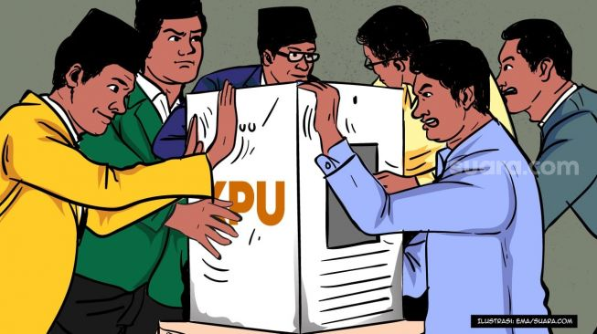

Politik
6 Partai Baru yang Bakal Bertarung di Pemilu 2024: Wajah Baru, Orang Lama

JAKARTA, SasapuNews - Jelang Pemilu 2024, beragam partai baru mulai muncul. Beberapa partai politik itu bahkan dibentuk oleh tokoh-tokoh lama di panggung politik Indonesia, siapa saja?
Baca Juga: Pemerintah Larang Ekspor Litsrik, Bahlil: Sebentar Lagi akan Dibuat Aturannya
Komisi Pemilihan Umum (KPU) Republik Indonesia (RI) telah menetapkan hari dan tanggal pemungutan suara untuk Pemilu 2024, yaitu pada Hari Rabu, tanggal 14 Februari 2024. Penetapan tersebut, tertuang dalam keputusan KPU RI nomor 21 tahun 2022.
Terhitung dua tahun dari sekarang, persiapan sejumlah partai politik untuk melaksanakan Pemilu 2024 sudah mulai terlihat. Mulai dari partai lawas hingga partai baru telah mempersiapkan diri untuk memperebutkan kursi di Pemilu 2024 mendatang.
Lantas siapa saja partai baru yang bisa ikut serta dalam memperebutkan kursi di Pemilu 2024 mendatang? Berikut ulasannya yang dirangkum dari berbagai sumber. Adapun penjelasannya adalah sebagai berikut:
1. Partai Ummat
Merupakan partai baru yang didirikan oleh Amien Rais. Apabila dilihat dari awal mula pembentukannya, partai ini terbentuk setelah hubungan Amien Rais dengan beberapa politisi PAN sempat renggang.
Saat ini sudah ada sebanyak 99 orang pendiri Partai Ummat yang mewakili 34 Provinsi. Untuk diketahui, partai ummat ini terbuka untuk semua kalangan, baik muslim ataupun non muslim.
2. Partai Kebangkitan Nusantara (PKN)
Merupakan partai baru yang didirikan oleh Anas Urbaningrum, mantan ketua umum Partai Demokrat. Partai Kebangkitan Nusantara (PKN) ini didirikan pada tahun 2021. Partai ini didirikan bersama Mirwan Amir, Ian Zulfikar, Bobby Triadi, dan Sri Mulyono.
3. Partai Pelita
Merupakan partai baru yang didirikan oleh Din Syamsuddin, Mantan Ketua PP Muhammadiyah. Partai ini didirikan pada 28 Februari 2022,
dan baru saja mendapat Surat Keputusan Pengesahan Badan Hukum dari Kementerian Hukum dan HAM. Jabatan Ketua Umum Partai dipegang oleh Beni Pramula, mantan Ketua Umum Ikatan Mahasiswa Muhammadiyyah.
4. Partai Gelombang Rakyat Indonesia (Gelora)
Merupakan partai yang baru mendapat SK Kemenkumham pada Rabu, 20 Mei 2022. Pada awalnya, partai ini telah mendeklarasikan diri pada 10 November 2019. Adapun tokoh - tokoh yang menempati posisi elit partai diantaranya, Anis Matta sebagai ketua umum, Fahri Hamzah sebagai wakil ketua umum, dan Mahfudz Siddiq sebagai Sekjen
Baca Juga: Bendera Setengah Tiang di Gedung Putih Usai Penembakan SD Texas
5. Partai Rakyat Adil Makmur (Prima)
Partai ini baru mendapat Surat Keputusan Pengesahan sebagai partai politik dari Kementerian Hukum dan HAM RI pada Desember 2020. Partai ini diprakarsai oleh seorang mantan aktivis sekaligus Ketua Umum Partai Rakyat Demokratik (PRD), yakni Agus Jobo
6. Partai Rakyat
Partai ini baru mendapat Surat Keputusan Pengesahan dari Kemenkumham pada tahun 2021. Adapun ketua umum dari partai rakyat ini adalah Arvindo Noviar.